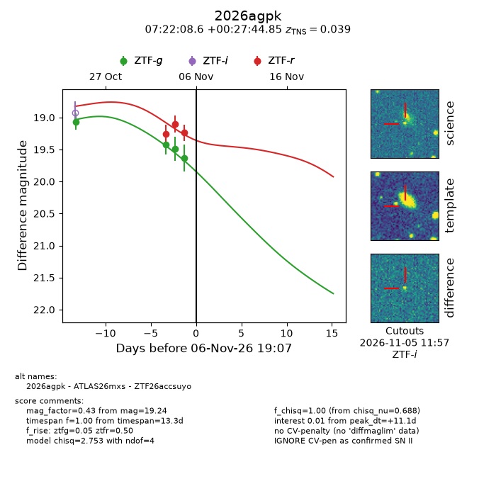
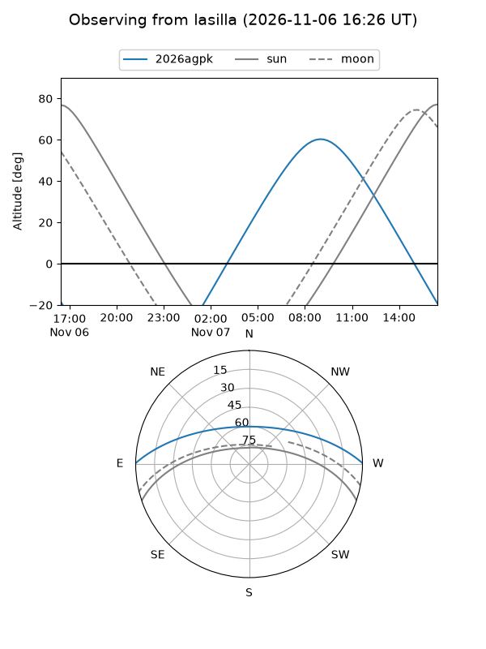
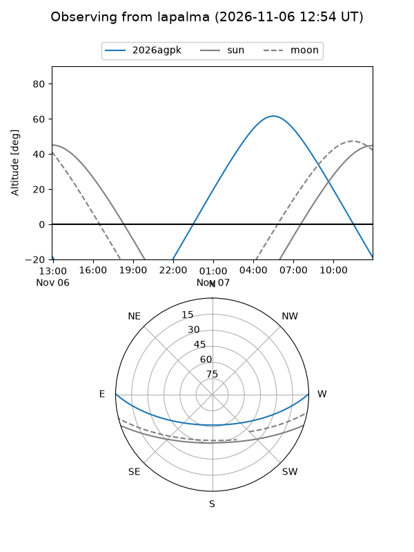
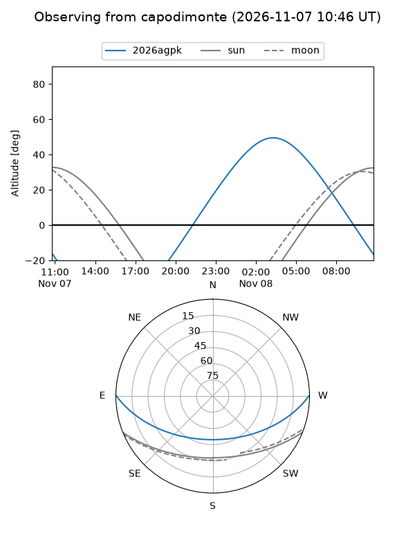
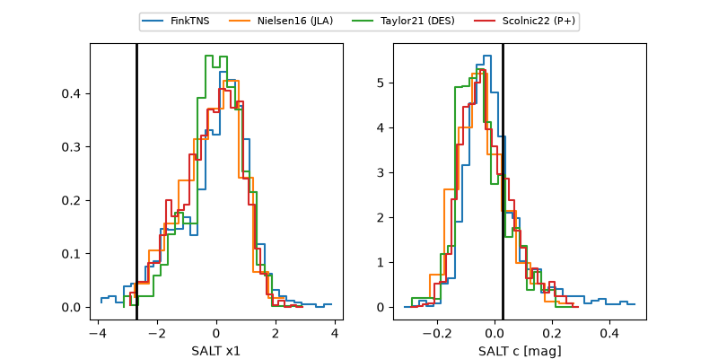

2026agpk
Target 2026agpk at 2026-11-06 19:09
Aliases and brokers:
FINK-ZTF: ztf.fink-portal.org/ZTF26accsuyo
Lasair-ZTF: lasair-ztf.lsst.ac.uk/objects/ZTF26accsuyo
ALeRCE-ZTF: alerce.online/object/ZTF26accsuyo
YSE-PZ: ziggy.ucolick.org/yse/transient_detail/2026agpk
TNS name: wis-tns.org/object/2026agpk
Direct TNS query: direct search
alt names
ZTF26accsuyo (ztf,fink_ztf)
2026agpk (tns,yse)
ATLAS26mxs (atlas)
Coordinates:
equatorial (ra, dec) = 110.5360,+0.46246
equatorial (HMS+DMS) = 07:22:08.64,+00:27:44.85
galactic (l, b) = (216.0350,+7.03996)
Flags:
TNS type: SN II
TNS redshift: 0.0390
peak dt: +11.1
Photometry:
last ztfg=19.64, ztfr=19.24
4 ztfg, 3 ztfr detections
Lightcurve

Visibility



Additional plots
